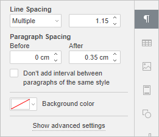

Podešavanje proreda u pasusu
U Document Editor-u možete podesiti visinu reda za tekst unutar pasusa, kao i razmake između trenutnog pasusa i prethodnog ili narednih pasusa.
Da biste to uradili,
- postavite kursor unutar željenog pasusa ili izaberite više pasusa mišem, odnosno ceo tekst pritiskom na kombinaciju tastera Ctrl+A,
- koristite odgovarajuća polja na desnoj bočnoj traci kako biste postigli željene rezultate:
- Prored – podešava visinu reda za tekst unutar pasusa. Možete izabrati jednu od tri opcije: najmanje (postavlja minimalni prored potreban da se uklopi najveći font ili grafika u redu), višestruki (postavlja prored izražen brojevima većim od 1), tačno (postavlja fiksni prored). Potrebnu vrednost možete uneti u polje sa desne strane.
- Razmak pasusa definiše količinu razmaka između pasusa.
- Pre – definiše količinu razmaka ispred pasusa.
- Posle – definiše količinu razmaka nakon pasusa.
-
Ne dodaj razmak između pasusa istog stila – označite ovo polje ako vam nije potreban razmak između pasusa istog stila.

Ovi parametri su dostupni i u prozoru Pasus – napredna podešavanja. Da biste otvorili prozor Pasus – napredna podešavanja, kliknite desnim tasterom miša na tekst i izaberite opciju Napredna podešavanja pasusa iz menija ili koristite opciju Prikaži napredna podešavanja na desnoj bočnoj traci. Zatim se prebacite na karticu Uvlačenja i razmaci i idite u odeljak Razmaci.

Za brzo menjanje proreda u trenutnom pasusu, možete koristiti i ikonu Prored pasusa na kartici Home gornje trake sa alatkama, birajući potrebnu vrednost sa liste: 1.0, 1.15, 1.5, 2.0, 2.5 ili 3.0 reda, kao i otvoriti odgovarajući desni panel klikom na stavku menija Opcije proreda i izabrati da li želite da dodate ili uklonite razmak posle pasusa.